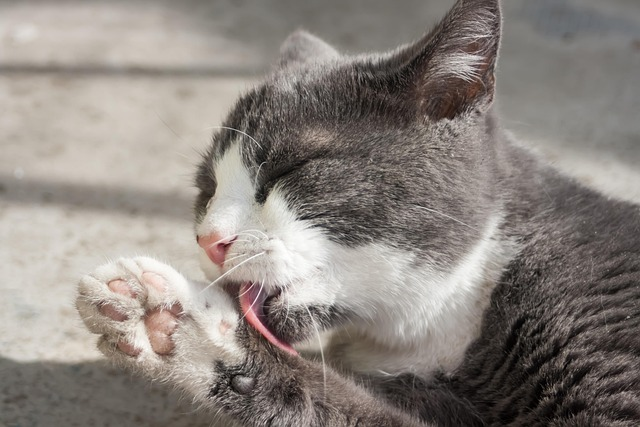

Grooming
Brush your cat a few times a week to reduce shedding and hairballs. Use nail clippers made for cats and trim only the clear tip of the claw. Regular grooming helps you check for skin problems or parasites early.

Brush your cat a few times a week to reduce shedding and hairballs. Use nail clippers made for cats and trim only the clear tip of the claw. Regular grooming helps you check for skin problems or parasites early.
